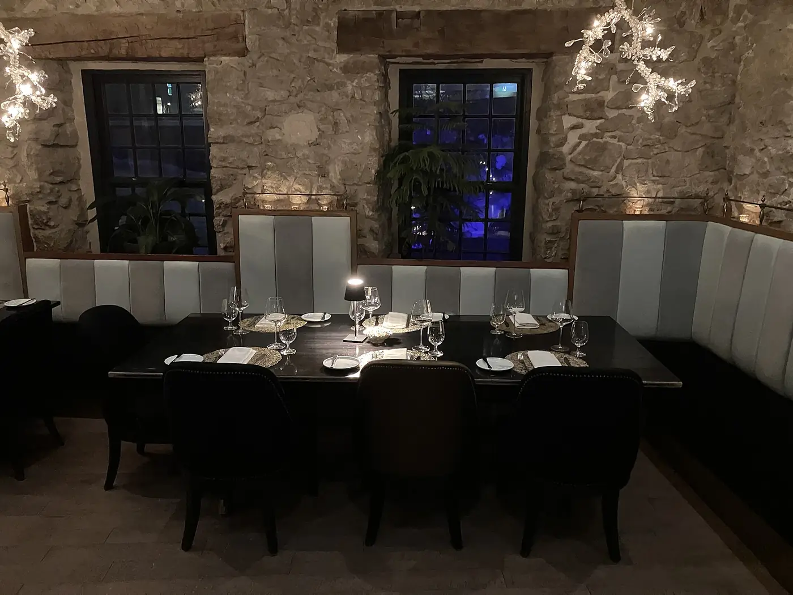

Distribuciones Valentín / Menaje
Todo el menaje de tu local,
en el mismo reparto que tu pedido.
Vajilla, cubertería, cristalería, mantelería y menaje auxiliar para hostelería. Repartimos hasta 90 km desde Medina del Campo.
Pedir información
Por qué pedirlo con nosotros
Menaje de hostelería,
como el resto de tu pedido.
Distribuimos menaje para hostelería desde Medina del Campo, junto con el resto de productos que ya recibes de nosotros.
Un solo proveedor
Café, bebidas, lácteos, conservas, embutidos, congelados y menaje en el mismo distribuidor.
Un solo pedido
El menaje va en el mismo pedido que el resto de tus productos, y se reparte junto.
Reparto cercano
Repartimos desde Medina del Campo, hasta unos 90 km a la redonda.
Atención personalizada
Trato cercano y un equipo con experiencia para asesorarte.
Aperturas y reformas
Equipa
tu local.
Si abres un local
Cuéntanos qué tipo de local abres y cuántas mesas tendrá, y te asesoramos con la vajilla, la cubertería, la cristalería, la mantelería y el menaje auxiliar.
Si reformas tu sala
¿Renuevas la sala o cambias la carta? Dinos qué necesitas y lo consultamos contigo.
Preguntas frecuentes
Antes
de pedir.
¿Qué menaje distribuís?
Vajilla, cubertería, cristalería, mantelería y menaje auxiliar de cocina y sala, para bares, restaurantes, hoteles, cafeterías y catering.
¿Puedo pedir el menaje junto con el resto de mi pedido?
Sí. Reunimos en un solo pedido café, bebidas, lácteos, conservas, embutidos, congelados y menaje.
¿Hasta dónde repartís?
Desde Medina del Campo, en la comarca y hasta unos 90 km a la redonda. Si no sabes si llegamos a tu local, escríbenos con el nombre de tu pueblo o su código postal y te lo confirmamos.
¿Cómo puedo consultar por el menaje de mi local?
Llámanos al 635 09 80 44, escríbenos a oficina@distribucionesvm.es o usa el formulario de esta página. Te respondemos lo antes posible.
Distribuciones Valentín
Hablemos
de tu pedido.
Cuéntanos qué necesita tu negocio y te respondemos lo antes posible.
- 635 09 80 44
- oficina@distribucionesvm.es
- Cl Labradores, n.º 45, parcela 24B
47400 Medina del Campo, Valladolid